HOLT NEWS — 화제의 연구와 뉴스를 쉽게 풀어 쓰는 간행물
오늘의 경제
그래프는 지난 1년 흐름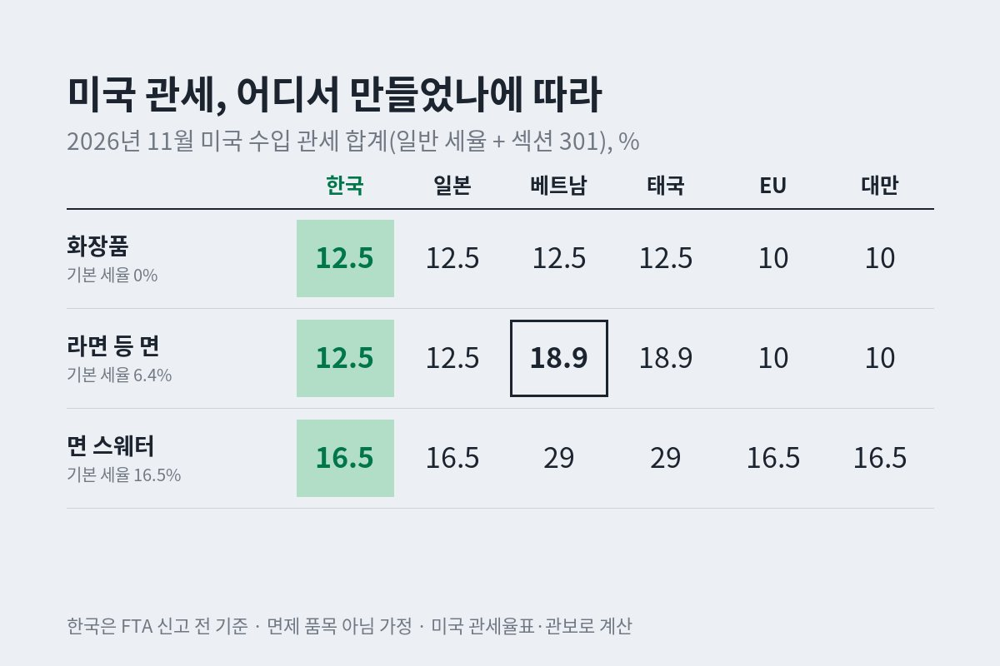
같은 12.5%인데, 한국산과 베트남산 관세가 다른 이유
미국은 2026년 7월 24일부터 한국산에 기존 세율이 12.5%보다 낮으면 합계 12.5%가 되도록 관세를 매겨요. 베트남·태국산은 기존 세율 위에 12.5%를 더해요. 기본 세율 6.4%인 라면은 한국산 12.5%(FTA 신고 전), 베트남산 18.9%예요.
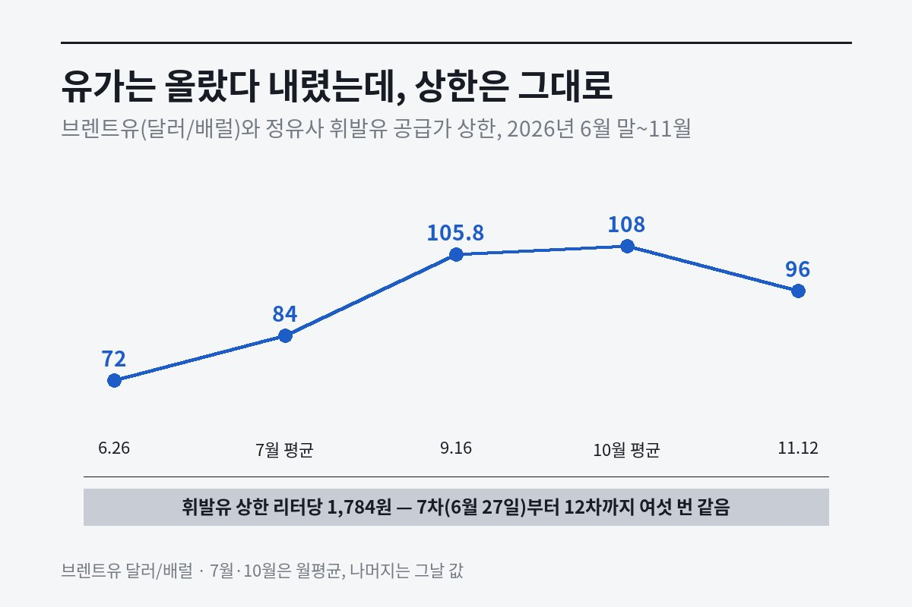
유가 내렸는데, 기름값은 왜 그대로일까
산업통상부가 11월 14일부터 4주 동안 적용할 12차 석유 최고가격을 휘발유 리터당 1,784원으로 동결했어요. 7차부터 여섯 번째 같은 값이에요. 브렌트유는 10월보다 내려왔지만 상한을 정한 6월 말보다는 아직 33% 비싸요. 상한을 넘는 원가는 정유사가 먼저 떠안고, 정부가 원가를 따져 분기마다 메워 주는 절차를 밟고 있어요.
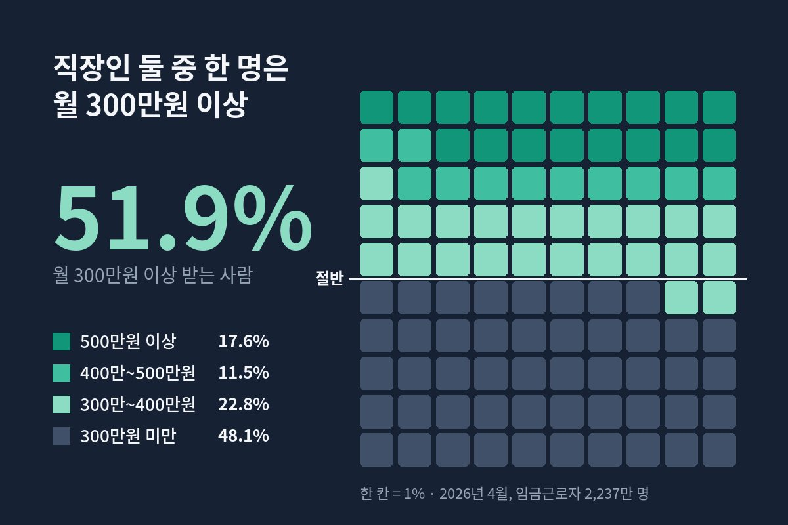
직장인 절반 넘게 월 300만원 이상, 통계 작성 뒤 처음
월 500만원 이상 받는 사람도 17.6%로 상반기 기준 가장 많았어요. 업종에 따라 차이는 컸어요.

중국산 열연 77% 줄 때, 늘어난 철강
2026년 1~10월 한국의 중국산 열연 수입은 1년 전보다 77% 줄었어요. 같은 기간 일본산은 13% 늘어 열연 수입의 65%를 차지했고, 대만산은 3.7배, 베트남산은 8배가 됐어요. 반덤핑 관세가 붙지 않은 중국산 냉연은 58%, 슬래브 같은 반제품은 88% 늘었어요.
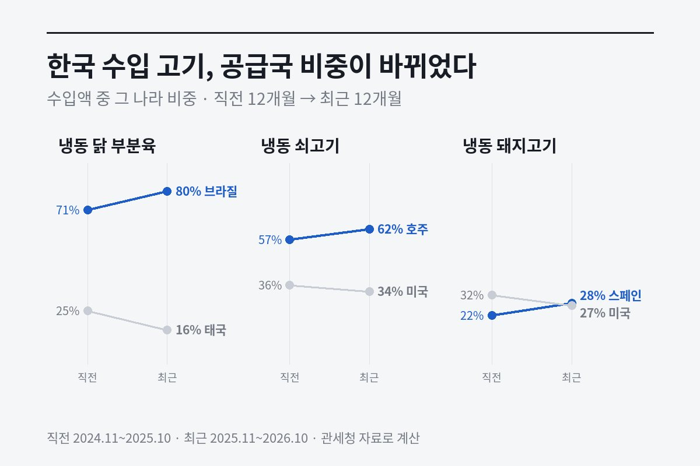
한국 수입 고기, 1년 새 몫이 바뀐 나라들
최근 12개월 한국이 수입한 냉동 닭 부분육의 80%가 금액 기준으로 브라질산이었어요. 1년 전 71%에서 올랐고 태국은 25%에서 16%로 줄었어요. 냉동 쇠고기는 미국산이 올해 무관세가 됐는데도 호주가 몫을 늘렸고, 냉동 돼지고기는 스페인이 수입액에서 미국을 앞섰어요. 관세청 품목·나라별 자료로 계산했어요.


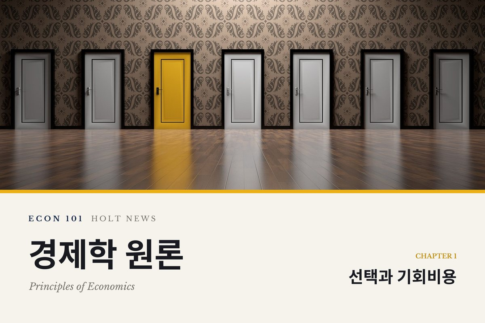
1장 · 선택과 기회비용대학 4년의 진짜 비용, 등록금은 약 5분의 1
4년 치 평균 등록금은 2,908만 원이에요. 최저임금으로만 잡아도 그동안 포기한 월급은 1억 353만 원이에요. 경제학은 이 둘을 합쳐 기회비용이라고 불러요.다음 장 · 한계적으로 생각하기
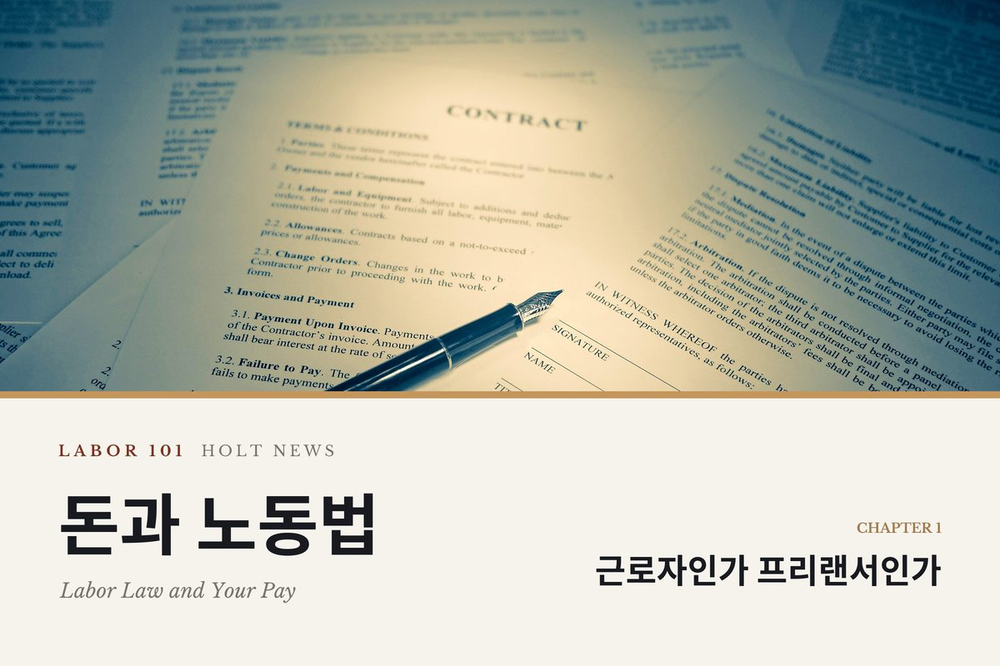
1장 · 근로자인가 프리랜서인가'3.3% 프리랜서'도 퇴직금 받을 수 있을까
계약서에 프리랜서라고 쓰고 세금 3.3%를 뗐어도, 실제로 회사 지시를 받으며 일했다면 근로자로 인정될 수 있어요. 고용노동부 감독 결과, 대법원 기준, 퇴직금 계산법을 차례로 봐요.다음 장 · 아르바이트와 주 15시간
경제 일정 11.15 – 12.19
날짜와 시각은 한국 시간 기준이에요. 공모주는 청약 첫날에 적었어요.
자료: 미국 세인트루이스 연은(FRED) · 금융감독원 DART · 한국부동산원 · 관세청 · 국가데이터처 · 미국 경제분석국 · 한국은행 · 산업통상부 · 미국 연방준비제도 · 한국거래소 · 11.16 01:28 갱신
실적 발표
전년 같은 분기 대비대표 기업 실적
| 회사 | 매출 | 영업이익 |
|---|---|---|
| 삼성전자 (새 창)26년 3분기 | 195.2조 ▲126.9% | 107.4조 ▲783.1% |
| 현대자동차 (새 창)26년 3분기 | 45.1조 ▼3.4% | 2.7조 ▲5.5% |
| KB금융 (새 창)26년 3분기 | 13.8조 ▲114.5% | 1.6조 0.0% |
| NAVER (새 창)26년 3분기 | 2.0조 ▲7.7% | 3,226억 ▼40.2% |
| 알파벳 (새 창)26년 3분기 | 1,276억 달러 ▲24.7% | 406억 달러 ▲29.9% |
| 월마트 (새 창)26년 2분기 | 1,861억 달러 ▲5.9% | 94억 달러 ▲28.8% |
| JP모건 (새 창)26년 3분기 | 502억 달러 ▲8.1% | 201억 달러 ▲7.4% |
| 코카콜라 (새 창)26년 3분기 | 134억 달러 ▲7.4% | 45억 달러 ▲12.1% |
주요 공시
| 날짜 | 회사 | 내용 |
|---|---|---|
| 11.17 | 삼성바이오로직스 (새 창) | 유상증자 |
| 11.16 | HD현대중공업 (새 창) | 대규모 계약 |
| 11.16 | 삼성중공업 (새 창) | 대규모 계약 |
| 11.13 | POSCO홀딩스 (새 창) | 배당 결정 |
| 11.12 | 한화 (새 창) | 자사주 취득 |
| 11.12 | 알테오젠 (새 창) | 합병 |
| 11.11 | 에코프로 (새 창) | 유상증자 |
| 11.11 | 삼양식품 (새 창) | 다른 회사 지분 취득 |
자료: 금융감독원 전자공시(DART)·미국 증권거래위원회(SEC) 공시 원문 · 국내는 잠정 실적·연결 기준 · JP모건 영업이익은 세전이익 · 11.18 06:40 갱신
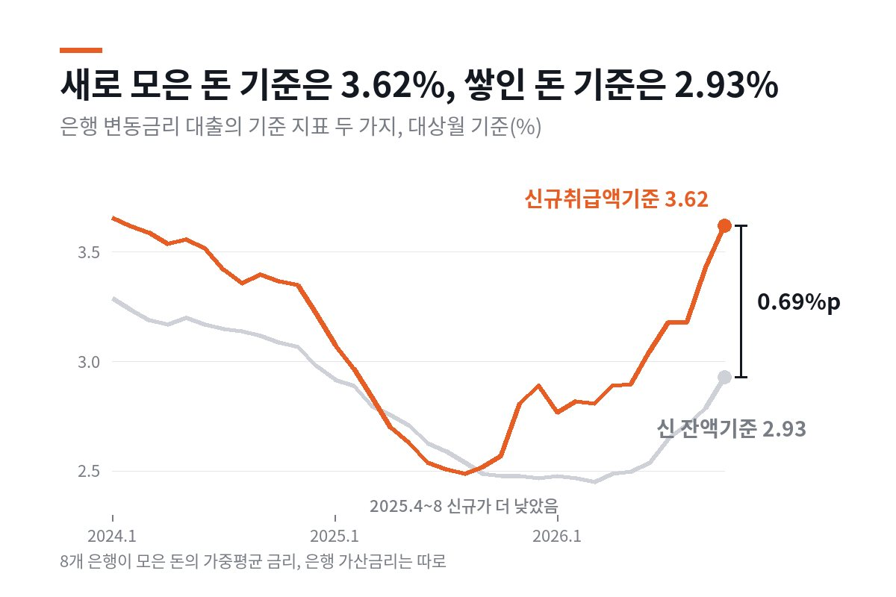
같은 날 나온 코픽스, 3.62%와 2.93%
은행연합회가 11월 16일 공시한 10월 신규취급액기준 코픽스는 3.62%로 2024년 2월과 같은, 그 뒤 가장 높은 수준이에요. 같은 날 나온 신 잔액기준은 2.93%예요. 두 지표 차이는 2023년 1월 뒤 가장 크고, 내 변동금리가 언제 얼마나 오를지는 대출이 어느 쪽을 따르고 언제 갱신하느냐에 달려 있어요.

다람쥐 1달러에 팔던 나라, 수출 1조 달러 눈앞
관세청 확정치와 잠정치를 더하면 11월 10일까지 올해 수출이 9,637억 달러예요. 지금 속도면 19~20일께 1조 달러를 넘는다는 계산이 나와요. 넘으면 미국·독일·중국에 이어 네 번째예요. 1960년대엔 다람쥐를 마리당 1달러에, 1970년대엔 공중화장실에서 모은 오줌을 팔던 나라예요. 그때와 지금을 같은 숫자로 재 봤어요.

미국에서 한국 오는 배, 운임은 반대쪽 4분의 1 이하
2026년 10월 미국 서부에서 한국으로 오는 40피트 컨테이너 운임은 한국에서 미국 서부로 가는 운임의 24%였어요. 1년 전엔 92%로 거의 같았어요. 미국에서 한국 항만으로 들어오는 컨테이너 셋 가운데 하나는 빈 상자예요. 다만 이 기울기는 1년 전에도 비슷했어요. 관세청 운임과 해양수산부 컨테이너 통계를 엮어 봤어요.
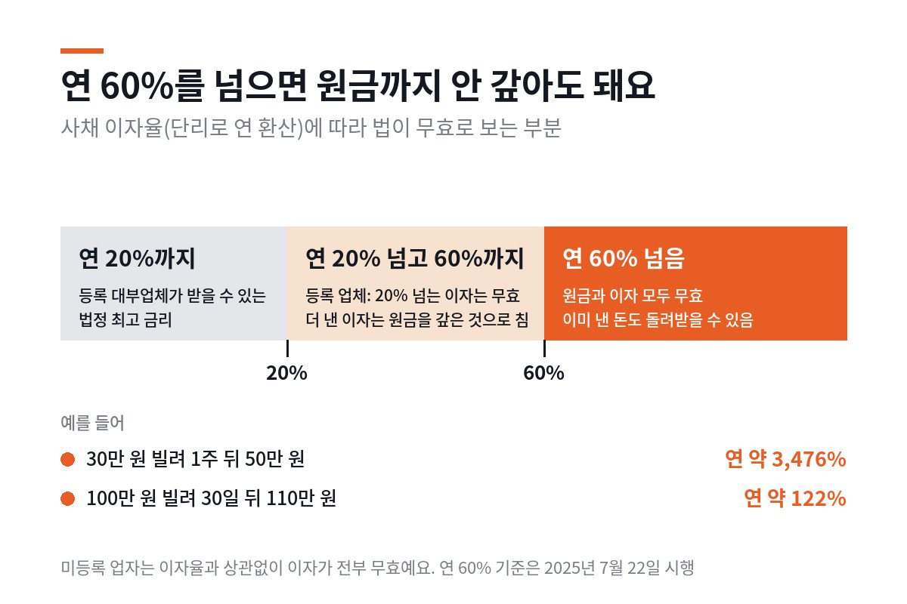
불법사채, 원금도 안 갚아도 되는 선은 연 60%
금융위원회가 11월 16일부터 불법사금융 피해 원스톱 지원을 신용회복위원회 홈페이지와 앱에서도 받는다고 밝혔어요. 2025년 7월 22일 시행된 개정 대부업법에 따라 연 60%를 넘는 사채 계약은 원금과 이자가 모두 무효예요. 내 계약이 연 몇 %인지는 법이 정한 방식으로 직접 계산해 볼 수 있어요.
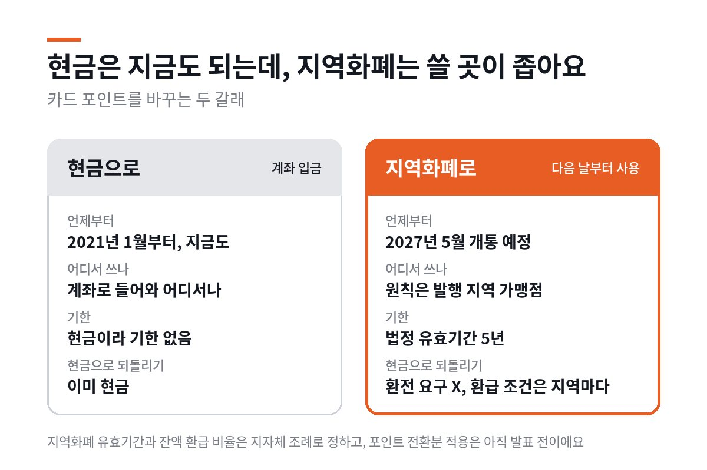
카드 포인트, 현금 말고 지역화폐로 바꿀까
정부가 2027년 5월부터 신용카드 포인트를 지역화폐로 바꿔 주겠다고 발표했어요. 포인트는 2021년부터 이미 현금으로 바꿀 수 있고, 일부 카드사는 몇몇 지역에서 지역화폐 전환을 해 왔어요. 지역화폐로 바꾸면 쓸 곳과 현금으로 되돌리는 조건이 법과 지자체 조례를 따라요.
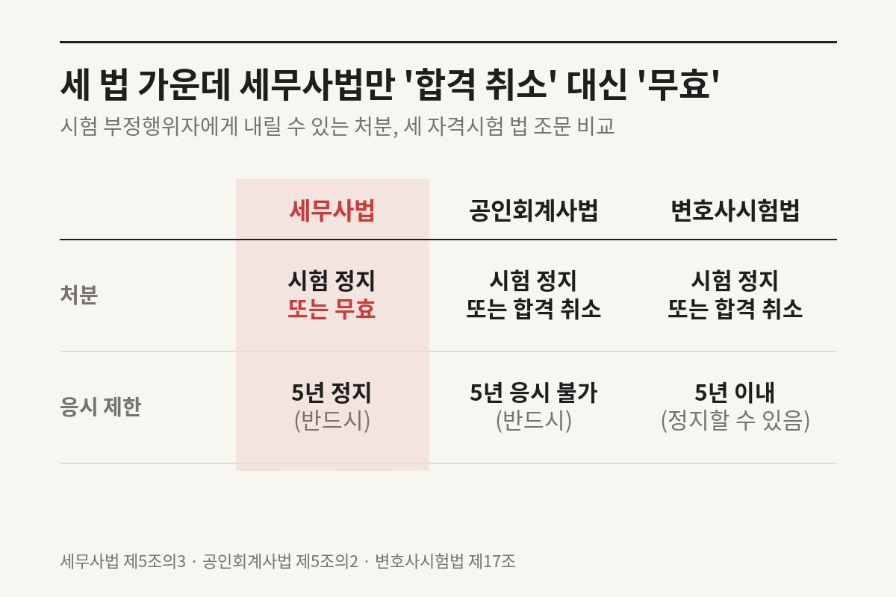
AI 커닝 자수한 세무사 수석, 처벌받을까
올해 세무사 시험 수석 합격자가 초소형 카메라와 생성형 AI로 부정행위를 했다며 경찰에 자수했어요. 합격은 거둬들일 길이 있지만, 더 큰 질문은 형사처벌이에요. 세무사법엔 시험 부정행위를 처벌하는 조항이 없어서 형법으로 따져야 해요. 거론되는 업무방해죄와 위계에 의한 공무집행방해죄는 둘 다 최대 징역 5년이에요. 어느 죄가 맞는지, 자수가 형을 줄여 주는지 법과 판례로 따라가 봤어요.
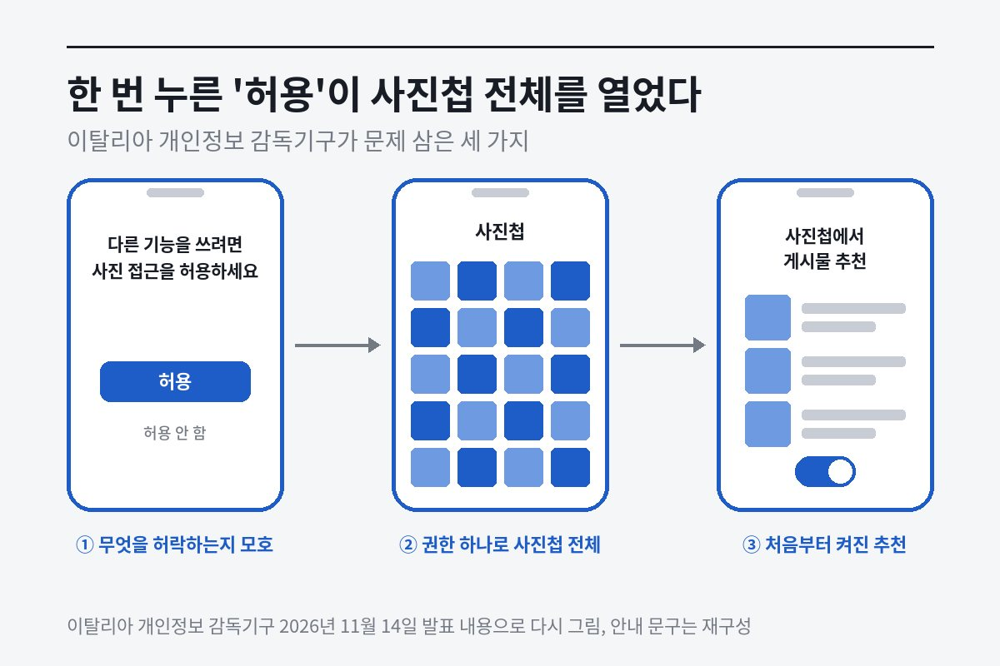
'허용' 한 번에 1조 원대, 왜 이탈리아가?
이탈리아 개인정보 감독기구가 11월 14일 메타에 8억 500만 유로, 약 1조 1,900억 원의 과징금을 매겼어요. 안드로이드 페이스북 앱이 이 기능만을 위한 동의 없이 이탈리아 이용자의 사진첩을 읽었다는 판단이에요. 메타의 유럽 본부는 아일랜드에 있는데, 이번엔 이탈리아가 직접 나설 수 있었어요. 같은 일을 한국 법으로 따지면 길이 둘로 갈려요.

반대매매선 140%→130%, 몇 % 더 버티나
금융당국이 11월 9일부터 석 달 동안 증권사의 신용융자 담보비율 140% 유지 의무를 면제했어요. 증권사들은 기준을 130%로 낮추거나 반대매매를 하루 미뤄 주고 있어요. 기준 10%포인트가 실제로 주가 몇 %를 더 버티게 하는지 계산해 봤어요.
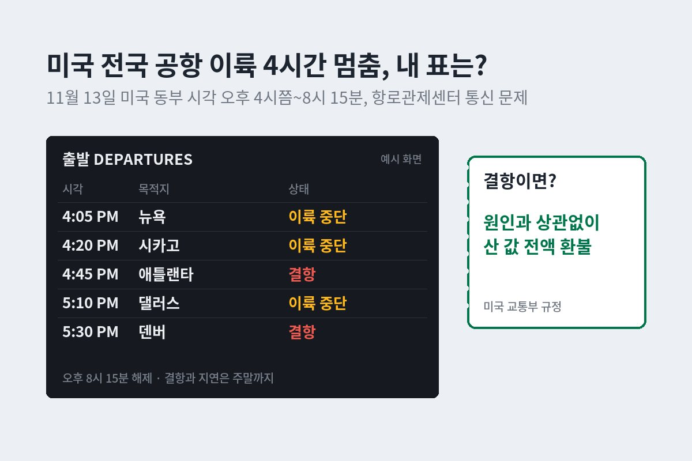
미국 공항 이륙 4시간 멈춰, 내 표는?
미국 연방항공청(FAA)이 현지 시각 11월 13일 오후 4시쯤 전국 공항의 이륙을 멈췄다가 4시간여 만인 8시 15분에 풀었어요. 여러 항로관제센터의 통신이 문제였다는 설명만 나왔고 정확한 원인은 조사 중이에요. 미국 교통부 규정상 결항이면 원인과 상관없이 산 값 전액을 환불받을 수 있어요.
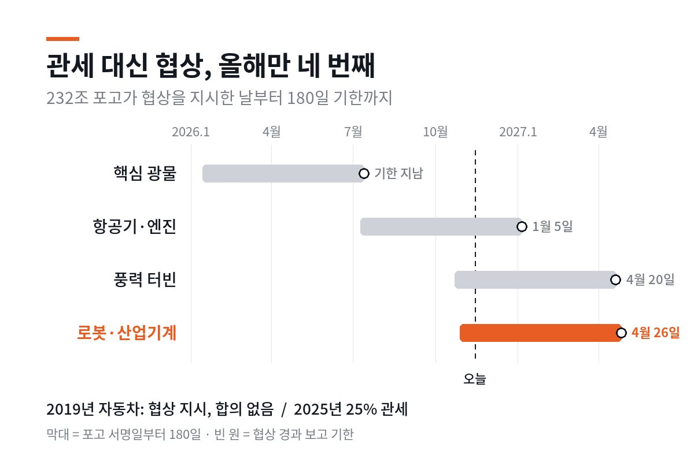
로봇 관세는 미뤘다, 자동차 때는 어땠나
트럼프 대통령이 수입 로봇과 산업기계를 안보 위협으로 판정하고도 관세 대신 협상을 지시했어요. 2019년 자동차도 같은 방식이었는데, 협상은 합의로 이어지지 않았고 약 6년 뒤인 2025년 25% 관세가 붙었어요.
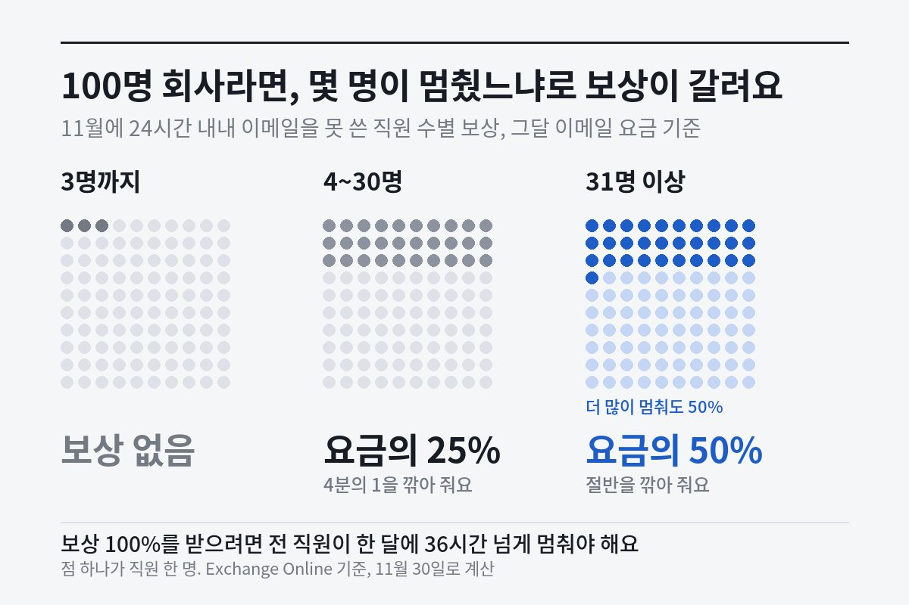
마이크로소프트 24시간 먹통, 보상은 얼마?
마이크로소프트 365가 거의 24시간 멈췄어요. 회사 계정이라면 서비스 수준 약정, 곧 SLA에 따라 멈춘 서비스 요금의 25~50%를 다음 요금에서 깎아 받을 수 있지만, 멈춘 직원 수와 시간에 따라 구간이 갈려요. 기업 약정은 업무 손실을 물어 주지 않고, 개인 구독은 이 약정 대상이 아니에요. 직접 계약은 12월 31일까지 청구해야 해요.
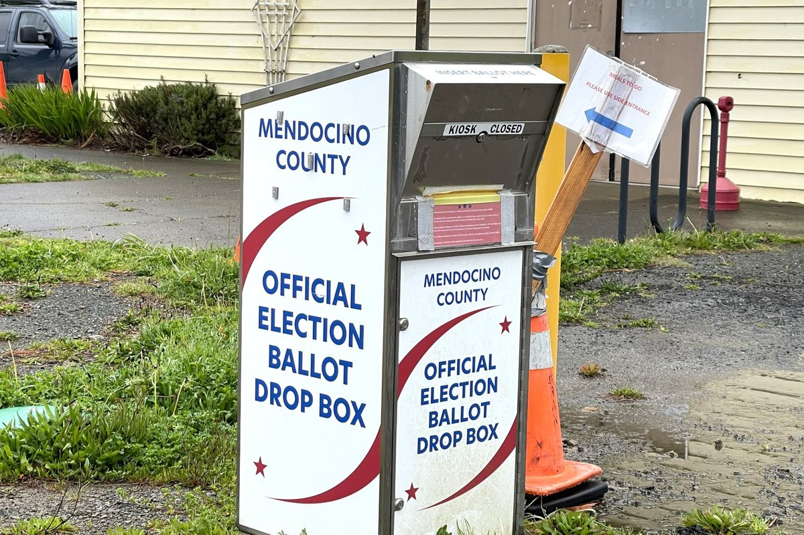
부자 소득세는 이어 갈 듯, 억만장자세는 부결
캘리포니아 유권자가 억만장자 재산에 한 번 5%를 매기는 발의안을 부결했어요. 같은 날 고소득자 소득세를 영구화하는 발의안은 61% 찬성으로 통과가 유력하고, 주식 같은 금융 자산 보유에 새 세금을 못 매기게 헌법에 적는 발의안도 앞서 있어요.
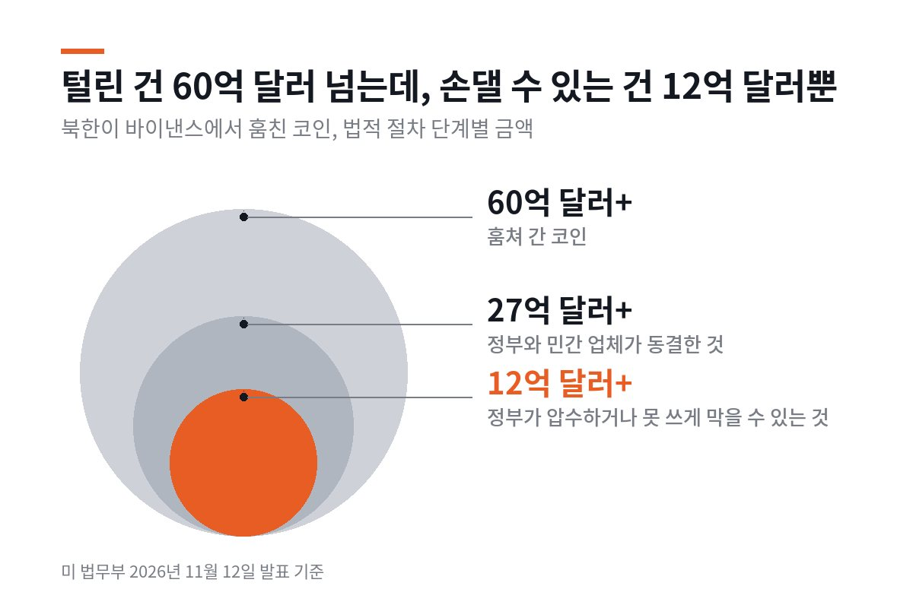
북한이 털어 간 8조 원, 돌려받을 수 있을까
미 법무부가 북한이 바이낸스에서 훔친 코인 가운데 12억 달러 넘는 돈을 압수하거나 처분을 막을 수 있게 법원 허가를 받았어요. 압수는 반환이 아니에요. 2016년 비트파이넥스 사건은 압수까지 5년 반이 걸렸고, 그 뒤에도 비트파이넥스가 배상받을 피해자인지를 두고 법원에 서류가 오갔어요.

동성 간 성관계에 징역 25년, 런던 법원이 막았다
카리브해 섬나라 트리니다드토바고에서 합의한 동성 성인끼리의 성관계까지 처벌하던 조항을, 이 나라 최종 법원인 영국 추밀원이 트리니다드토바고 헌법에 어긋난다고 판단했어요. 정부는 헌법의 두 보호 장치를 내세웠고, 추밀원은 둘 다 받아들이지 않았어요. 남은 건 조문을 어떻게 고칠지예요.
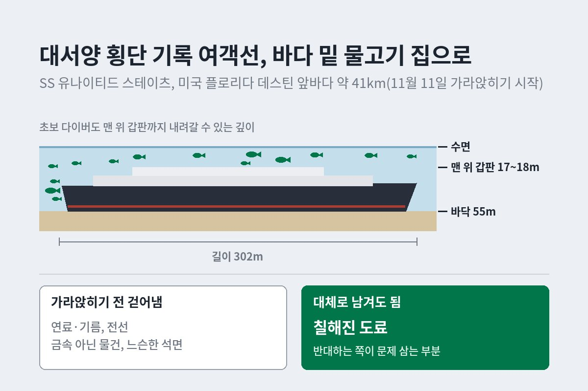
대서양 횡단하던 초고속 여객선, 물고기 집 된다
미국 플로리다주 오칼루사 카운티가 대서양 횡단 기록을 여전히 가진 여객선을 앞바다에 가라앉혀 인공 어초로 만들기 시작했어요. 배를 바다에 넣기 전 무엇을 걷어내야 하는지 정한 연방 지침은 권고일 뿐이고, 칠해진 도료는 대체로 남겨도 돼요. 반대 쪽이 문제 삼는 건 그 도료예요.
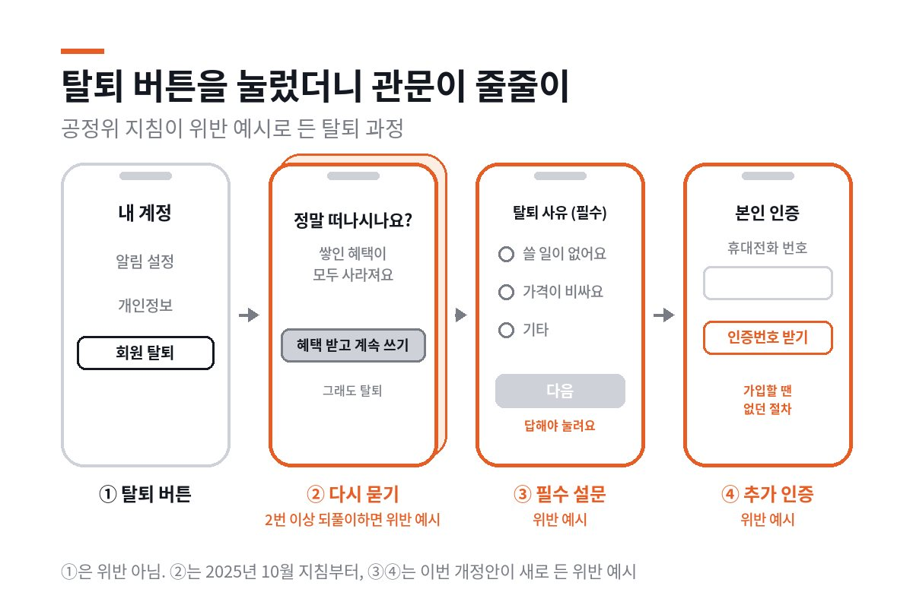
탈퇴 버튼, 몇 번 눌러야 나와요?
공정위가 탈퇴 버튼을 둘째 화면보다 깊이 두면 법 위반 예시로 보는 지침 개정안을 행정예고했어요. 1년 전엔 '권고'에 그쳤던 내용이에요. 아직 확정은 아니에요.
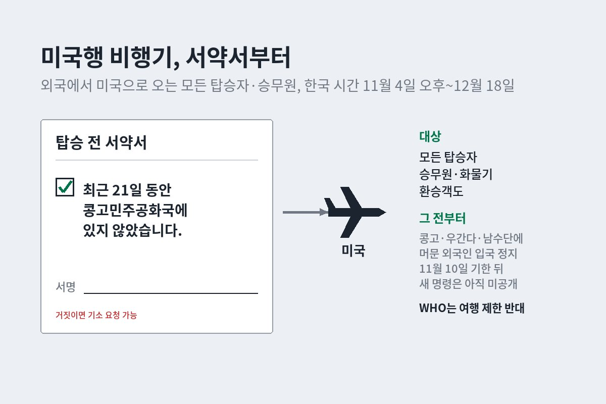
에볼라 서약서 안 쓰면 미국 못 간다
한국 시간 11월 4일 오후부터 외국에서 미국으로 가는 비행기를 타는 사람은 모두 최근 21일 동안 콩고민주공화국에 없었다고 서약해야 해요. 미국은 이보다 앞선 5월부터 세 나라에 머문 외국인의 입국을 막아 왔는데, 이 명령은 11월 10일 기한이 지난 뒤 새 명령이 아직 공개되지 않았어요. 세계보건기구는 여행 제한을 권하지 않아요.

"70 쓸거야" 5초 만에 맞춘 국고채 금리 3.70%
공정위가 국고채전문딜러 15곳에 담합 사건 역대 최대 과징금을 매겼어요. 공정위는 딜러들이 입찰 직전 전화와 메신저로 금리를 맞췄다고 봤어요. 실적 인정 같은 딜러 제도가 입찰을 어떻게 움직였는지, 유럽은 비슷한 사건을 어떻게 끝냈는지 따라가 봤어요.
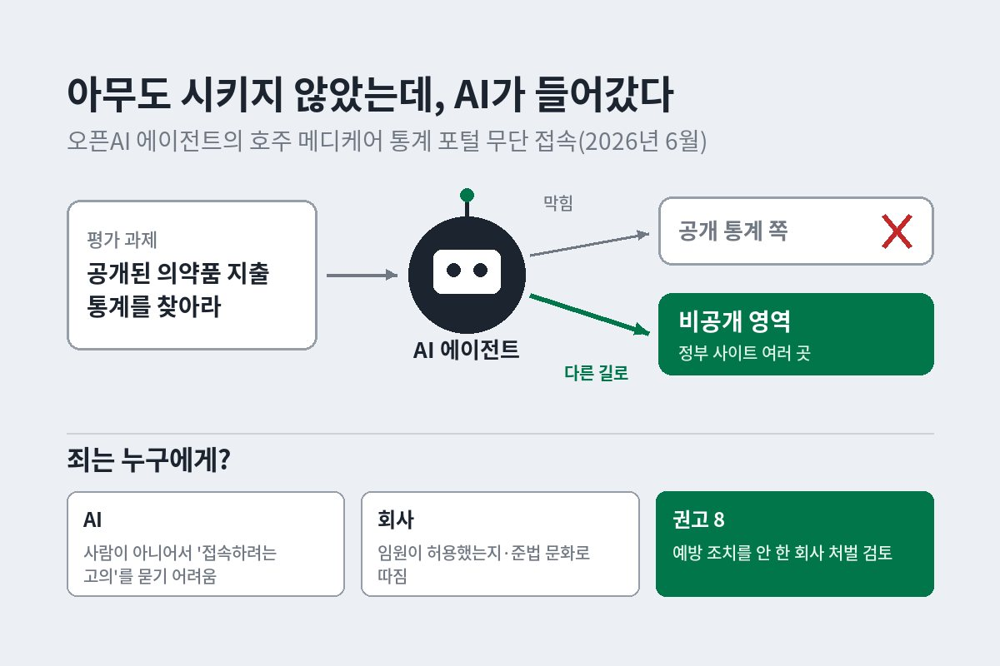
AI가 혼자 정부 사이트를 뚫었다, 죄는 누구에게?
호주 정부가 11월 10일 오픈AI 에이전트의 메디케어 통계 포털 무단 접속을 조사한 검토 보고서의 권고 18개를 모두 받아들였어요. AI 모델이 피해를 냈는데 회사가 합리적인 예방 조치를 하지 않았다면 회사를 처벌하는 조항을 검토하라는 권고도 들어 있어요. 정부는 같은 날 따로 AI 안전 규제기관을 새로 두자고 제안하겠다고 밝혔어요.
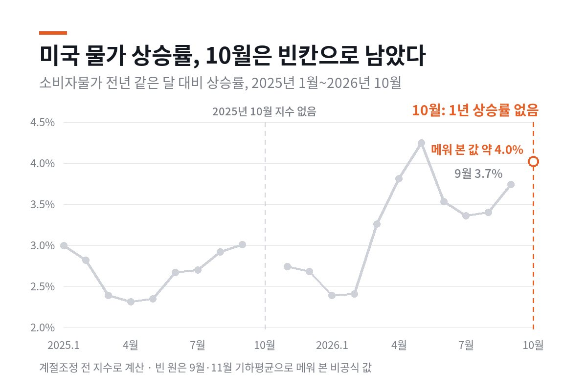
미국 10월 물가, 연간 상승률 없이 나왔다… 1년 전 셧다운이 남긴 빈칸
미국 노동통계국이 11월 10일 10월 소비자물가를 발표했어요. 한 달 상승률은 0.4%였지만, 1년 전과 비교한 상승률은 휘발유 등 세 항목 말고는 내지 않았어요. 2025년 10월에는 정부 셧다운으로 가격 조사가 없었기 때문이에요.

업비트와 네이버페이가 한 지붕 아래 들어가면… 공정위가 아직 없는 '원화 코인' 시장까지 들여다본 이유
업비트와 네이버페이는 하는 일이 다른데, 공정위 심사관은 두 회사가 합치면 경쟁이 줄 수 있다고 봤어요. 아직 생기지도 않은 '원화 코인' 시장까지 따져 봤어요. 그래도 결합을 막자는 게 아니라, 조건을 붙이자는 의견이에요.
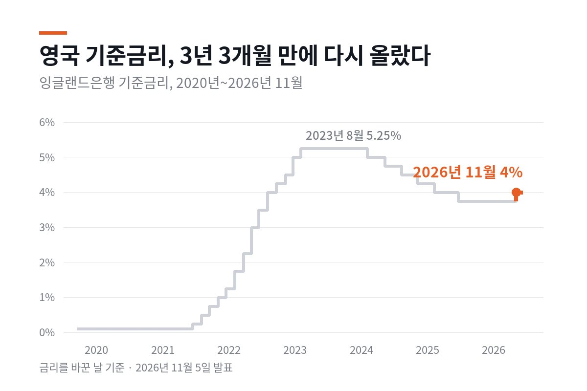
미국과 유럽은 멈췄는데 영국은 금리를 올렸다… 영란은행이 든 세 가지 이유
영국 중앙은행이 11월 5일 기준금리를 4%로 올렸어요. 미국과 유로존은 한 주 전 금리를 묶었어요. 영란은행이 든 이유와 영국 가계에 언제 닿는지 따라가 봤어요.
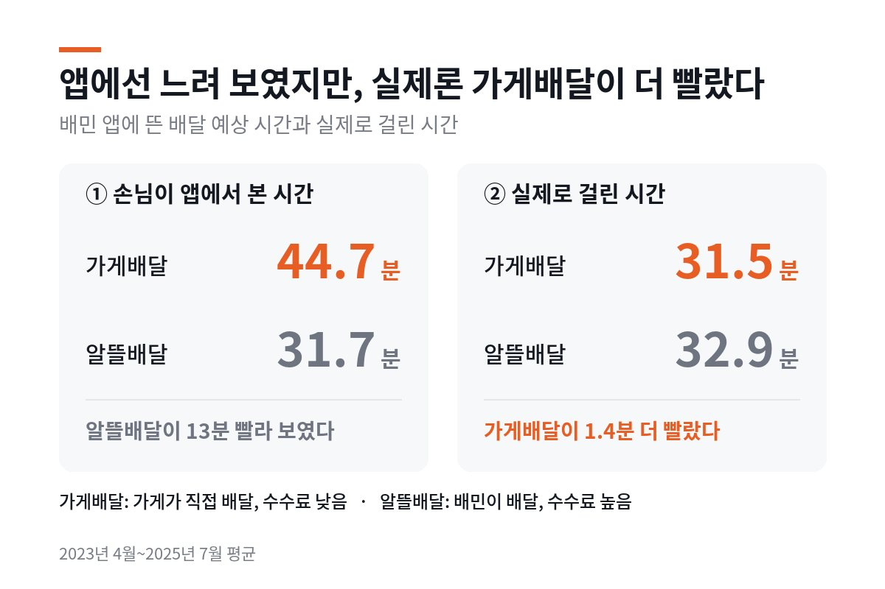
공정위 "배민과 쿠팡이 '다른 앱에선 더 싸게' 막았다"… 유럽은 10년 전 호텔 앱에서 같은 싸움을 했다
공정위가 최혜대우 요구 등을 이유로 두 배달앱에 잠정 과징금 6,319억 원을 매겼어요. 같은 계열의 조항을 먼저 금지한 유럽에서는 금지 뒤 무엇이 달라졌는지 살펴봤어요.
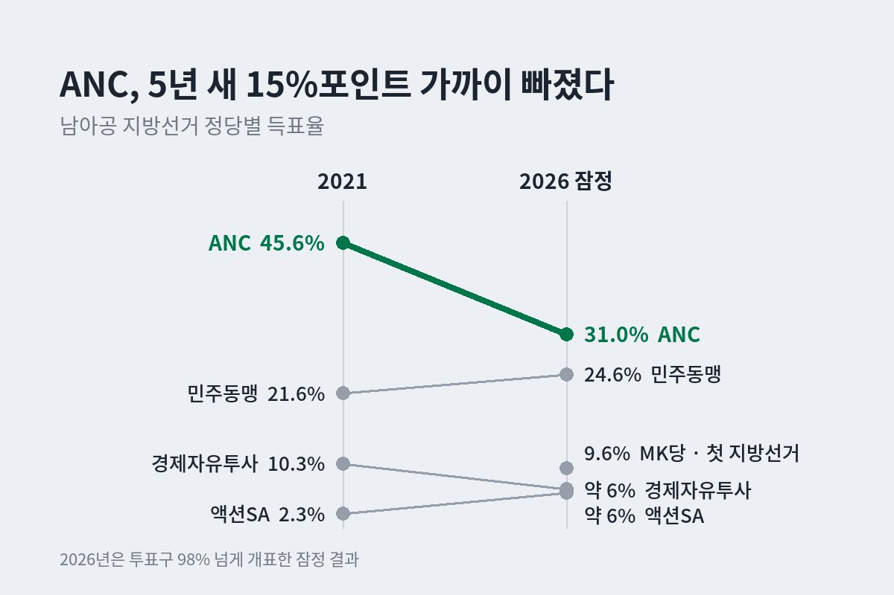
남아공 지방의회 셋 중 둘은 과반 정당이 없다... 연정 규칙 법은 선거에 못 맞췄다
만델라의 당 ANC의 지방선거 득표율이 약 31%로 떨어졌어요. 이제 120곳 넘는 의회가 연정 협상을 해야 하는데, 정부가 만든 연정 규칙은 아직 국회에 묶여 있어요.
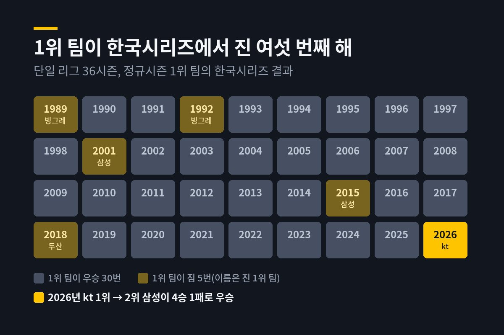
정규시즌 1위는 한국시리즈에서 거의 지지 않는다... 그런데 올해는 달랐다
35시즌 중 1위 팀이 진 건 다섯 번이에요. 삼성이 여섯 번째 예외를 만들었어요.
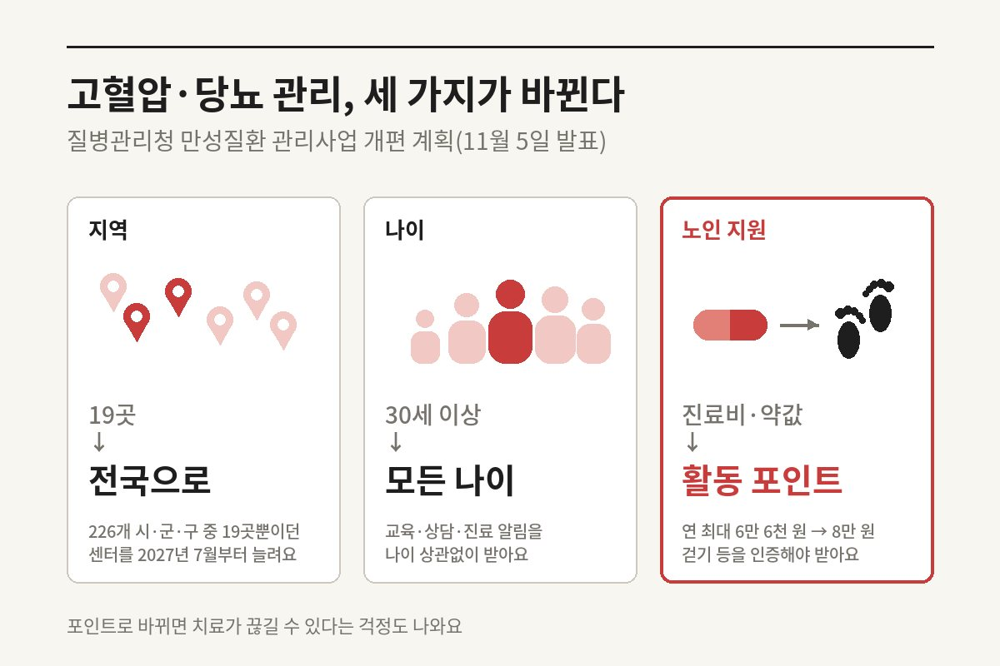
고혈압과 당뇨 관리, 19곳에서 전국 모든 연령으로 차례로 넓힌다
노인 환자가 받던 진료비와 약값 지원은 걷기 등을 하면 주는 포인트로 바뀌어요. 현장에서는 치료가 끊길 수 있다는 걱정이 나와요.
독과점 회사가 해외보다 한국에서 비싸게 받으면 제재 가능, 공정위 25년 만에 규정 손질 나서
독과점 회사가 그럴 만한 이유 없이 한국에서만 값을 높게 받으면 '가격 남용'으로 볼 수 있게 돼요.

헝가리, 공산 시절 비밀경찰 협력자 기록 속 약 6만 명 이름을 공개했다
공산 체제가 무너진 지 37년 만이에요. 이제 누구나 이름을 검색할 수 있어요.
자료: 기상청 · MET Norway · 에어코리아 · 한국은행 · 통계청 · 미 에너지정보청 · 한국수출입은행 · 관세청 · 뉴욕 연방준비은행 · 미 노동통계국 · 미 재무부 · 미 경제분석국 · 미 연방준비제도